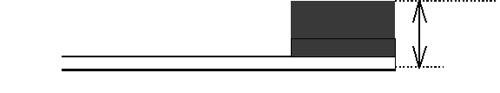
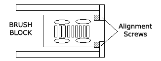

Operating Documentation
Direction 5114043-800, Rev# 9
LightSpeed 3.X Service Methods (Advanced)
Operating Documentation |
| Required Persons | Preliminary Reqs | Procedure | Finalization |
|---|---|---|---|
| 1 | Timing Not Applicable | 30 mins | Timing Not Applicable |
Procedure Effectivity:
| Assembly: | GANTRY |
| Subassembly: | Slip Ring |
| Purpose: | Remove and Measure New Power Brush |
| Last Revised: | October 2003 |
| NOTE: | Remove and measure new POWER brushes (after 1,500,000 revolutions). |
| Item | Qty | Effectivity | Part# | Manufacturer | |
|---|---|---|---|---|---|
| HEPA Vacuum Cleaner | 1 | - | 46-297933P1 | - | |
| Standard FE Toolkit | 1 | - | - | - | |
| Item | Qty | Effectivity | Part# | Manufacturer |
|---|---|---|---|---|
| HEPA Filter | 1 (if required) | - | 46-297948P1 | - |
| Tie-wrap | 1 (if required) | - | - | - |
| ELECTROCUTION HAZARD. | |
| HIGH VOLTAGE PRESENT. | |
| use proper lockout/tagout procedures before servicing equipment. |
Turn OFF all power at the PDU.
| Read instructions in PM procedure CTPM1319 (Removing Slip Ring Brush Debris) before proceeding. | |
Remove the slip ring covers by removing the four bolts for each cover.
Remove the grounding strap form the power brush block.
| DO NOT bend or deform brushes. | |
| DO NOT touch tips or slip ring. | |
| DO NOT file or clean the brush tips under any circumstances. | |
Remove brush block:
Remove two of the four bolts--one on the top of the block, one on the bottom.
Hold the brush block against the brackets and remove the remaining two screws.
Remove the brush block from the brackets.
Measure the remaining brush tip thickness using a scale. The measurement includes the copper spring material and the copper braid. Refer to Illustration 1.
Illustration 1: Measuring the thickness of the brush tip

If any individual brush tip is less than 4mm (0.16 in), a new brush block assembly must be installed.
| NOTE: | Power brush tips will wear much faster than the signal brush tips. |
DO NOT replace the signal brush blocks just because the power blocks need replacing. Power brush tips are expected to last 2,000,000 revolutions or two years, where signal brush tips are expected to last for 10 years (12,000,000 revolutions).
If any of the brush tips are between 4 and 5mm (0.16 and 0.20in), measure again after 200,000 gantry revolutions.
| POTENTIAL FOR EQUIPMENT DAMAGE. USING VACUUM HOSE NEAR LIVE ELECTRONIC EQUIPMENT MAY CAUSE EQUIPMENT DAMAGE DUE TO STATIC. MAKE SURE EQUIPMENT IS TURNED OFF PRIOR TO VACUUMING NEAR ELECTRONIC EQUIPMENT. | |
Clean any brush debris from the slip ring covers and brush assemblies using a HEPA vacuum cleaner and a soft brush attachment.
| NOTE: | The soft brush attachment that comes with the HEPA vacuum cleaner should NOT be used for anything other than slip ring brush debris cleaning. The brush must be kept clean to avoid contamination of the slip ring and brush tips. It is recommended to store the brush in a separate closed bag (e.g. Zip-lock bag). |
Visually inspect all 14 slip ring tracks. Tracks should be smooth. Look for pits or deposits, which are sometimes hard to see. Deposits can be silver or black from arching. If there is a suspect area on the ring, take the end of a CLEAN tie wrap and gently drag it across the suspect area. You should be able to feel a vibration in the tie wrap if a pit or deposit is present. If pits or deposits are found, refer to procedure CTPM-1306 (Clean Slip Ring Tracks).
Re-install the Brush Block:
Position the brush block assembly with brush tips aligned with slip ring tracks and the insulator block against alignment screws, as shown in Illustration 2.
Illustration 2: Brush block assembly

Compress the brush tip springs against the slip ring tracks and hold the Brush Block against the brackets.
Install all the four screws, but do not tighten.
Check that there is clearance between the brush tips and the slip ring barriers.
Tighten all the four screws to 22 +/- 3 in-lb. (0.254 +/- 0.35 m-kg.).
Re-install the ground strap.
Rotate the Gantry manually and check again that the brush tips are centered between the track barriers.
Install the slip ring covers.
Turn ON the power.
If a new Brush Block was installed, rotate Gantry for 10 minutes at 1 revolution/second to wear in new brush tips. This can be done under Utilities, CT Tools, DDC, selecting axial, 1 sec., x-ray off.
No finalization required.